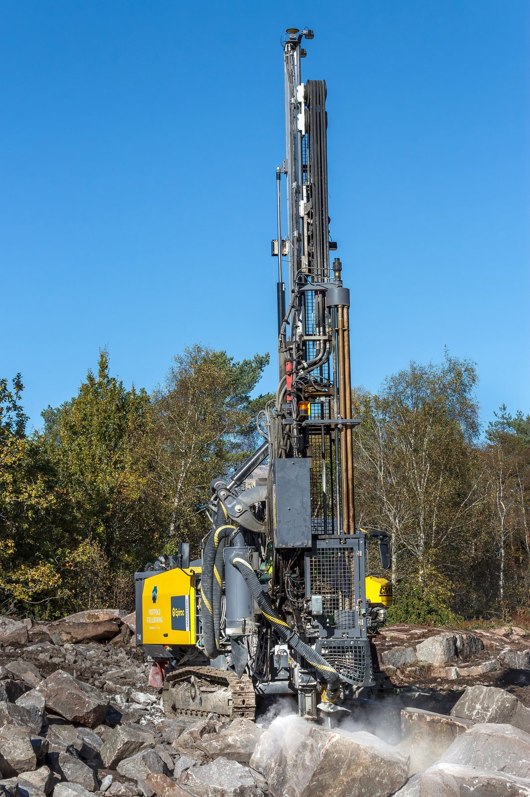
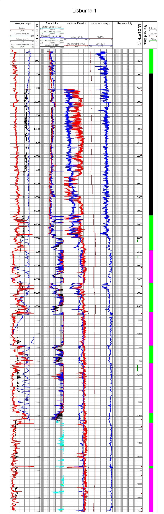
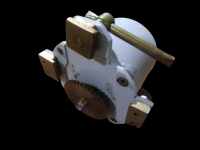
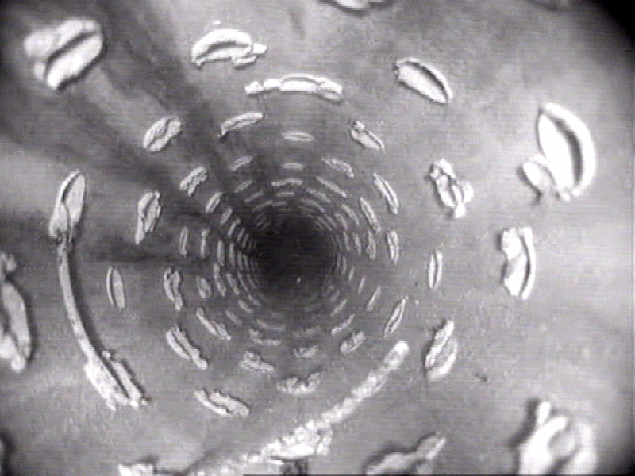
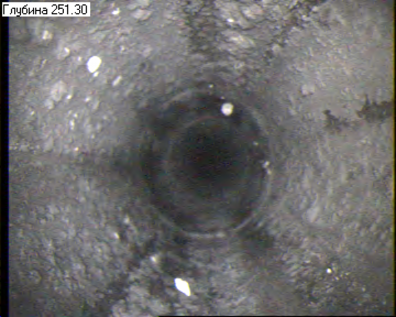
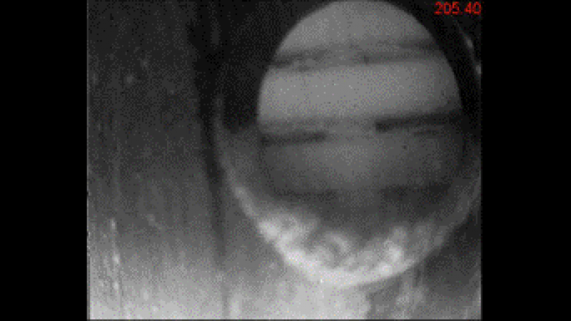
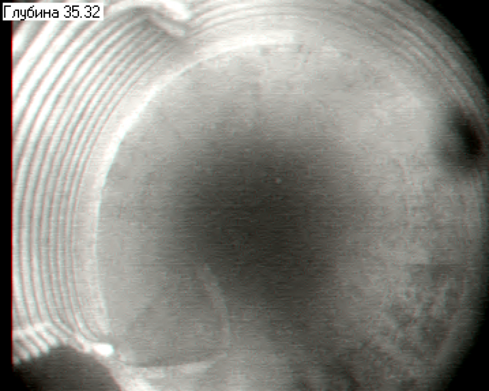
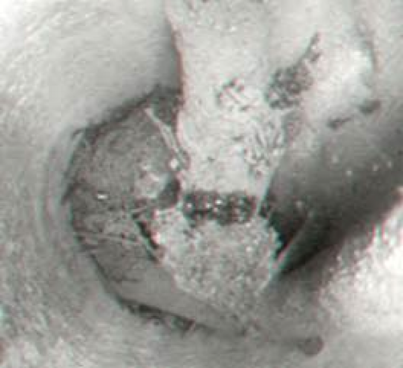

Приборы для каротажа скважин
Томское предприятие АСУ-ЭКСПЕРТ с 2009 года выпускает скважинные приборы электрического, гамма- и видеокаротажа, каротажные лаборатории и регистраторы.
Что мы выпускаем
- Регистрирующая аппаратура5 моделейКаротажные лаборатории, регистраторы и система глубины: запись, калибровка и обработка данных ГИС в реальном времени.
- Электрический и комплексный каротаж10 моделейПриборы для каротажа рудных и водяных скважин: все измерения за один спуско-подъём, цифровая передача по одножильному кабелю.
- Контроль перфорации и муфтовых соединений2 моделиПрихватоопределители, шаблоны и локаторы муфт, приборы комплексного каротажа для обсаженных скважин.
- Видеокаротаж и телеинспекция3 моделиВизуальный контроль эксплуатационных колонн, фильтров и забоя: видеосъёмка через одножильный кабель длиной до 4000 м.
Лаборатория ГЕОФИТ
Комплексные исследования нефтяных, рудных и газовых скважин: запись, калибровка и обработка в одном комплексе.
- Настройкатаблицы параметров скважинных приборов, макеты по видам исследований, оформление рабочего экрана
- Записькалибровки, данные ГИС, акустического каротажа и технологических параметров в реальном времени по глубине или времени
- Расчётгеофизические параметры по линейным и нелинейным характеристикам
- Контрольоперативная оценка качества каротажа, правка без изменения исходного файла данных
Все измерения за один спуск
Приборы электрического и гамма-каротажа измеряют и передают на поверхность параметры всеми зондами во всём диапазоне за один спуско-подъём.
Передача цифровая, по одножильному каротажному кабелю, код «Манчестер-2». Калибровка и настройка перед записью не нужны, наземной панели нет. Приборы сопрягаются со всеми выпускаемыми каротажными регистраторами.
Видеокаротаж
Прибор опускается на одножильном кабеле до 4000 м и снимает колонну, фильтры и забой. На записи видно:
- смятие труб и трещины
- отсутствие сальника
- деформацию надфильтровой трубы
- песчаную пробку
- заусенцы внутри труб
- недоворот муфт
- качество сварных швов
Контроль цементирования
Станция для нефтяных скважин с датчиками расхода, давления, плотности и температуры. Установка опрессована на 40 МПа по требованиям Госгортехнадзора РФ.
Программа показывает заливку ствола в реальном времени, чтобы оператор мог вмешаться до аварии. По результатам формируются отчёты в графической и табличной форме.





Подбор прибора
Отметьте методы, которые нужны на скважине. Останутся приборы, которые выполняют все отмеченные.
Все приборы каталога: 20
 ГЕОФИТ 1003Каротажная лаборатория
ГЕОФИТ 1003Каротажная лаборатория ГЕОФИТ 1108Каротажный регистратор
ГЕОФИТ 1108Каротажный регистратор Система глубиныГЕОФИТ
Система глубиныГЕОФИТ БКТП-М2Блок контроля технологических параметров
БКТП-М2Блок контроля технологических параметров
ДИГДатчик импульсов глубины КП-51ЭПрибор электрического каротажа
КП-51ЭПрибор электрического каротажа КП-52ЭСерия приборов электрического каротажа
КП-52ЭСерия приборов электрического каротажа КП-61ЭРТПрибор электрического каротажа
КП-61ЭРТПрибор электрического каротажа КП-71ЭГРТПрибор электрического каротажа
КП-71ЭГРТПрибор электрического каротажа КП-71ЭГРТВП-02Прибор электрического каротажа
КП-71ЭГРТВП-02Прибор электрического каротажа КП-81ЭГПрибор электрического и гамма-каротажа
КП-81ЭГПрибор электрического и гамма-каротажа- КП-91ЭГПрибор электрического каротажа
 КП-82БКРПрибор бокового и радиоактивного каротажа
КП-82БКРПрибор бокового и радиоактивного каротажа КП-242ЭГКомплексный скважинный прибор
КП-242ЭГКомплексный скважинный прибор ЗК-01МСКЗонд каротажный МСК, МЭП и ПС
ЗК-01МСКЗонд каротажный МСК, МЭП и ПС КП-240ГТРПрибор комплексного каротажа
КП-240ГТРПрибор комплексного каротажа- КП-241ГТРЛПрибор комплексного каротажа
 КП-410ВК2Прибор визуального контроля скважин
КП-410ВК2Прибор визуального контроля скважин КП-511ВКПрибор визуального контроля скважин
КП-511ВКПрибор визуального контроля скважин КП-512ВКПрибор визуального контроля скважин
КП-512ВКПрибор визуального контроля скважин
Кадры из скважин
Сняты нашими приборами видеокаротажа на объектах заказчиков. Лента прокручивается вбок.








Заказчики
География поставок- НПЦ по геологииРеспублика Беларусь, г. Минск
- АО «КузбассРазрезУголь»г. Кемерово
- АО «Сибирский химический комбинат»г. Северск
- АО «Сибирское ПГО»г. Красноярск
- АО «Узбекгеологоразведка»Республика Узбекистан, г. Ташкент
- АО «Узеньпромгеофизика»Республика Казахстан, г. Жанаозень
- АО «Хиагда»г. Чита
- ГБУ «Мосгоргеотрест»г. Москва
- МП «Томскводоканал»г. Томск
- ООО «Бурсиб-Н»г. Новосибирск
- ООО «Велко»г. Москва
- ООО «Газпромнефть НоябрьскНефтегазГеофизика»г. Ноябрьск
- ООО «Геомайн»г. Кемерово
- ООО «Ленинск-Кузнецкая геофизическая партия»г. Ленинск-Кузнецкий
- ООО «Октябрьский завод каротажного оборудования» ВНИИГИСг. Октябрьский
- ООО «Распадская угольная компания»г. Новокузнецк
- ООО «Техногео»Скважинные приборы электрического каротажа
- ООО «Юганскнефтегазгеофизика»г. Нефтеюганск
- ООО «Южно-Кузбасское ГРУ»г. Новокузнецк
- ТОО «Акпан»Республика Казахстан, г. Актобе
- ФГУП «ГидроСпецГеология»г. Москва
- ФГУП «НО РАО», Железногорский филиалг. Железногорск
Отгрузки
Все 424 записиВыигран тендер на поставку приборов комплексного каротажа "КП-244ГТР", "КП-245ГТР", "КП-247ГТР" и прибора видеокаротажа для Филиала "Железногорский ФГУП "НО РАО".
В ООО "Морские платформы" отгружен каротажный зонд "ЗК-01МСК
В ООО "Геотехконсалтинг" отгружен прибор электрического и гамма каротажа "КП-91ЭГВП-02
В ООО "Морские платформы" отгружен прибор комплексного каротажа "КП-71ЭГТРВП-02
В ООО "Геотехконсалтинг" отгружен каротажный зонд "ЗК-01МСК
В ООО "Техногео" отгружен прибор бокового и радиоактивного каротажа "КП-82БКР-02
Напишите инженеру
Опишите скважину, глубину, кабель и регистратор. Подберём прибор и пришлём предложение.